For this project, we will use a R to process our data. But before we do, we need to first use Photoshop to double check the property of the image. We can see that it is already in gray scale with 8 bits per channel. Therefore, we do not have to do anything.
Now, let us use R to convert this image into matrix form. I am going to use the R package imager to process this image into a matrix. Note that I will be importing the image below locally. Therefore, if you wish to have the code running, you will have to download the image below and change the path to the image in the code below.
# Importing the glue library for fstring equivalent in Rif (!requireNamespace("glue", quietly =TRUE)) {install.packages("glue")}library(glue)# Importing the imager libraryif (!requireNamespace("imager", quietly =TRUE)) {install.packages("imager")}library(imager)
Loading required package: magrittr
Attaching package: 'imager'
The following object is masked from 'package:magrittr':
add
The following objects are masked from 'package:stats':
convolve, spectrum
The following object is masked from 'package:graphics':
frame
The following object is masked from 'package:base':
save.image
# Importing the location of the image and the actual image# imageFile <- glue('OriginalFeyman.png')image =load.image('/Users/kendra/LinearAlg/LinearAlgLectures/submitted/projects_2/OriginalFeyman.png')"image = matrix(0, nrow=10, ncol=10)image[2,5] = 1image[2,4:6] = 1image[4,3:7]image"
# Checking the dimensions of the imported filedim(image)
[1] 691 1000 1 3
Now, we can see from the output that there are three color channels. This seems to be because imager still assumes that all imported images have three color channels, even though our Feyman picture is gray scale. Therefore, we will have to use the imager method to convert to gray scale.
# Converting to grayscalegray <-grayscale(image)# Plotting the pictureplot(gray)
Great, we should be able to see the imported image as a plot. Now, let us convert this picture into its pixel matrix.
# Convertion to the pixel matrixgrayMatrix <-as.matrix(gray)# Checking to see if the conversion back to picture from the pixel matrix yields the same image.testImg <-as.cimg(grayMatrix)plot(testImg)
We can see that the pixel matrix imager gives us contains values between 0 and 1. This is because imager works with normalized values. We can replace these normalized values by the product of these values by 255 to get the original gray scale values.
# Unnormalizing the pixel matrixunnormalizedGrayMatrix <- grayMatrix
Haar Wavelet Transform Matrix Construction
Now, let us get to the important part of constructing the Haar Wavelet Transform. To do so, we first should make sure that the dimensions of the pixel matrix is even.
# We want to make the pixel matrix have even rows and columns.# From ChatGBT we get a function to correct the pixel matrix.# Function to check and remove the first row or column based on odd countsremove_odd_row_or_column <-function(matrix_input) {# Get the number of rows and columns num_rows <-nrow(matrix_input) num_cols <-ncol(matrix_input)# Check if the number of rows is oddif (num_rows %%2==1) {# Remove the first row if odd matrix_output <- matrix_input[-1, ] } elseif (num_cols %%2==1) {# Remove the first column if odd matrix_output <- matrix_input[, -1] } else {# If neither is odd, return the original matrix matrix_output <- matrix_input }return(matrix_output)}# Now making our matrix even dimensional"Dimension of the pixel matrix before correction:"
[1] "Dimension of the pixel matrix before correction:"
dim(unnormalizedGrayMatrix)
[1] 691 1000
# Calling the functionevenMatrix <-remove_odd_row_or_column(unnormalizedGrayMatrix)"Dimension fo the pixel matrix after correction:"
[1] "Dimension fo the pixel matrix after correction:"
# Below is code to descale the image for testing."evenMatrix <- remove_odd_row_or_column(evenMatrix[seq(1,nrow(evenMatrix),32),seq(1,ncol(evenMatrix),32)])dim(evenMatrix)"
Now we can begin to construct the Haar Wavelet Transform Matrix.
# The Haar Wavelet Transform matrix is a square matrix and corresponds to the number of rows of the pixel matrix. I am creating a function that finds the Haar Wavelet Transform matrix for any arbitrary dimension.haarGet <-function(dimension) { haarMatrix <-matrix(NA, nrow = dimension, ncol = dimension)# Creating a dummy row that will be changed and added to the haarMatrix rowDummy <-rep(0, dimension)# Iterating over the rows. We will add each row accordinglyfor (row in1:dimension){ changedRow <- rowDummy# Getting the upper matrix U correctif (row <= dimension /2){ changedRow[c((2* row) -1, 2* row)] <-1 haarMatrix[row,] <- changedRow }# Getting the lower matrix L rightif (row > dimension /2){ changedRow[2* row - dimension] <-1 changedRow[2* row -1- dimension] <--1 haarMatrix[row, ] <- changedRow } }# Get the true matrix which includes the normalization square root of 2 over 2 term haarMatrix <- (sqrt(2) /2) * haarMatrixreturn(haarMatrix)}
Performing Compression
With our Haar Wavelet Transform Matrix function ready, we can try performing one instance of the Wavelet Transform.
# First encoding the dimension of the corrected pixel matrixdimension <-dim(evenMatrix)numRow <- dimension[1]numCol <- dimension[2]# The dimension of the W_m in the picture above corresponds to the number of rows of the pixel matrixW_m <-haarGet(numRow)# Likewise, the dimension of W_n in the picture above corresponds to the number of columns of the pixel matrix. Then we get its transposeW_n <-haarGet(numCol)W_nT <-t(W_n)# Get the resulting productresultMatrix <- (W_m %*% evenMatrix %*% W_nT) /2dim(resultMatrix)
[1] 690 1000
Ok, we are doing good here. We know the following:The dimensions of \(B, V, H, D\) are \(\frac{1}{2} (\text{row dimension})\times \frac{1}{2} (\text{column dimension})\).
Therefore, we can extract these matrices out of our result matrix.
The first plot is the image converted from the pixel matrix \(\begin{bmatrix} B & V \\ H & D \end{bmatrix}.\) The second plot is the image converted from the pixel matrix B. The third is V, fourth is D, and fifth is H.
More Compression!
Now, we can construct a function that automatically applies the Haar Wavelet Transform to a give pixel matrix. With this function, we can then see how much compression we can do before Feyman becomes too blurry :(.
First, we will create a function called HaarCompression that takes in a normalized pixel matrix and outputs the resulting pixel matrix after the Haar Wavelet Transform along with B, V, D, and H.
HaarCompression <-function(pixelMatrix){# Correcting to the correct dimensions evenMatrix <-remove_odd_row_or_column(pixelMatrix) dimension <-dim(evenMatrix) numRow <- dimension[1] numCol <- dimension[2]# The dimension of the W_m in the picture above corresponds to the number of rows of the pixel matrix W_m <-haarGet(numRow)# Likewise, the dimension of W_n in the picture above corresponds to the number of columns of the pixel matrix. Then we get its transpose W_n <-haarGet(numCol) W_nT <-t(W_n)# Get the resulting product resultMatrix <- (W_m %*% evenMatrix %*% W_nT) /2# Get the four matrices B <- resultMatrix[1:(numRow /2), 1:(numCol /2)] V <- resultMatrix[1:(numRow /2), (numCol /2+1):numCol] D <- resultMatrix[(numRow /2+1):numRow, (numCol /2+1):numCol] H <- resultMatrix[(numRow /2+1):numRow, 1:(numCol /2)]# Getting the output ready. This function will output a list containing the original matrix and the five partitioned matrices.return(list(HaarMatrix = resultMatrix, B = B, V = V, D = D, H = H))}# Testing with Feymantest =HaarCompression(grayMatrix)plot(as.cimg(test$HaarMatrix))
plot(as.cimg(test$B))
plot(as.cimg(test$V))
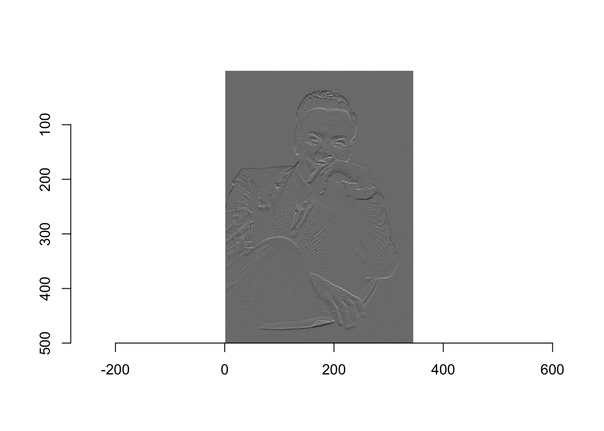
plot(as.cimg(test$D))
plot(as.cimg(test$H))
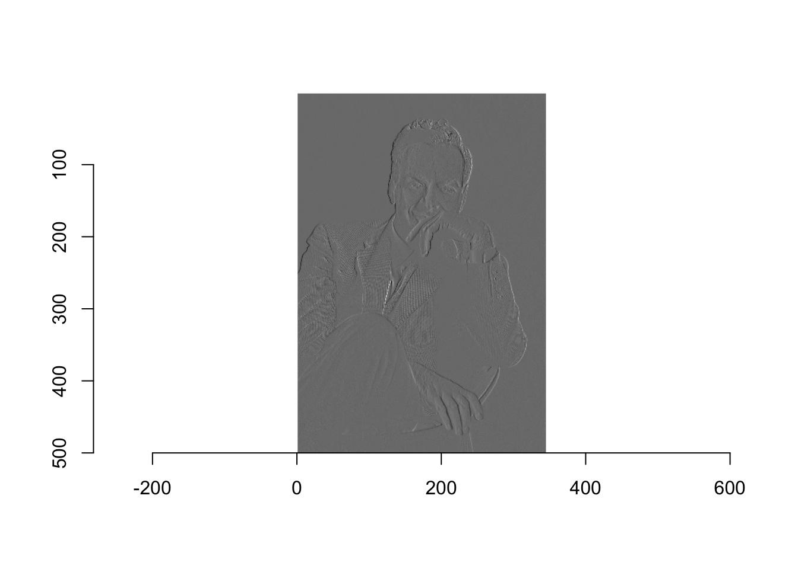
We can see that our HaarCompression function works as intended. Now we can create a new function that applies our HaarCompression function repeatedly.
IterativeHaarCompression <-function(image, numRuns){# Converting the image first to gray scale and then to the normalized pixel matrix and to make the dimensions even. gray <-grayscale(image) pixelMatrix <-as.matrix(gray) startingMatrix <-remove_odd_row_or_column(pixelMatrix)# Initializing the selected matrix selectedMatrix <- startingMatrixfor (run in1:numRuns){ resultList <-HaarCompression(selectedMatrix) selectedMatrix <- resultList$B } compressedImage <-as.cimg(selectedMatrix)return(compressedImage)}test <-IterativeHaarCompression(image, 4)plot(test, main="Feyman after 4 compressions.")
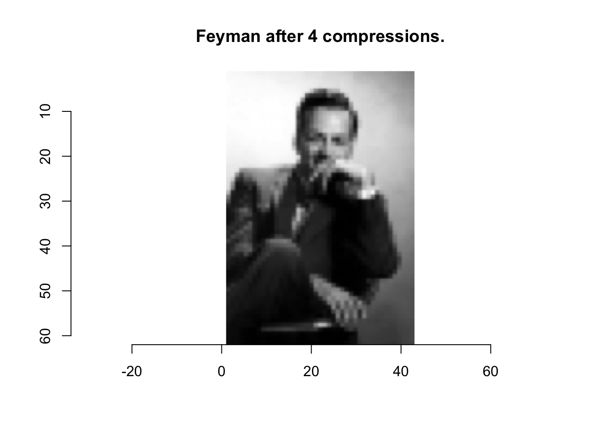
Let us view the results.
for(runs in1:8){ img <-IterativeHaarCompression(image, runs)plot(img, main=glue("Feyman after {runs} compressions."))}
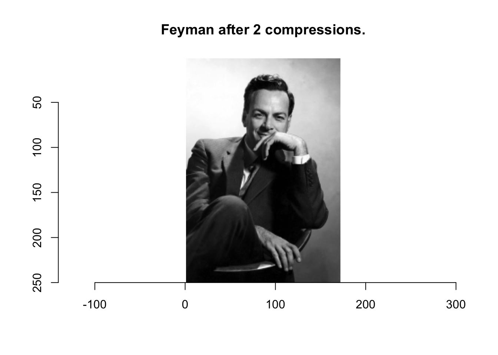
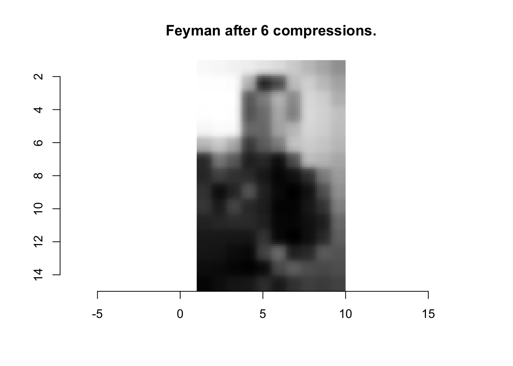
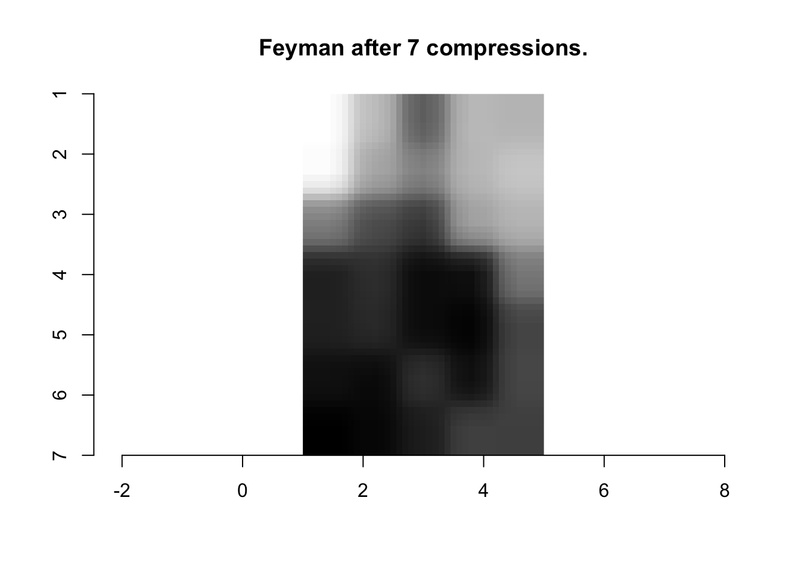
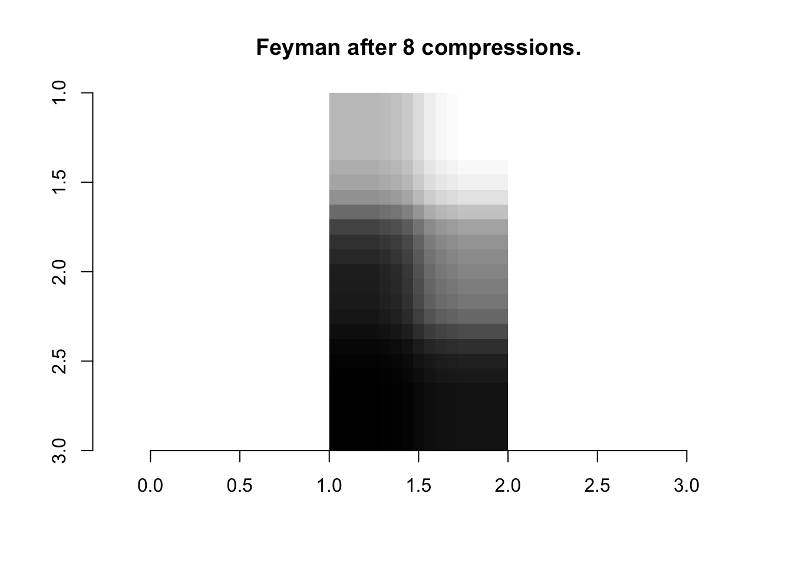
It is reasonable to conclude that after 4 compressions, Feyman is still acceptable. If one knows Feyman very well, the portrait after 5 compression may even be deemed acceptable. But after that, the portrait clearly becomes unrecognizable.
I think even the 4 compression Feynman is pretty sad! I can’t tell who it is, only the rough time period that the person is from…
Every compression reduces the totally number of elements in the pixel matrix by 4. Therefore, if we deem that 4 compressions for Feyman is maximum, then the approximate amount of reduction of pixels will be a factor of \(4^4 = 256\). Feyman started with \(690000\) pixel elements (after we do the even correction). So after four compressions we are left with around \(2695\) pixels. I am only saying around because every compression requires an even correction, which may decrease the number of pixels further. If we view the number of pixels as proportional to the size of the image, then we have reduced the size of Feyman by a factor of \(256\)! But of course, the size of the image is not linearly proportional to the number of pixels. Let us try saving the 4-times compressed photo to our desktop and compare the size of this photo to our original.
Wow, 290 times smaller! But maybe four times compressed Feyman is still a little too blurry. 2 compressions will give us a recognizable Feyman and the size of the photo will still decrease by more than a factor of 16.
Also, we don’t only have the \(B\) matrix after each compression. What can we do about the three edges matrices?
Edge Edge Edge
Let us look at the Haar Wavelet Transform Algorithm another time: \[
\begin{equation}
W_m A W_n^T = 2\begin{bmatrix} B & V \\ H & D \end{bmatrix},\\
\Rightarrow W_m^T WA W_n^T W_n = 2 W_m^T \begin{bmatrix} B & V \\ H & D \end{bmatrix}W_n, \\
\Rightarrow A = 2 W_m^T \begin{bmatrix} B & V \\ H & D \end{bmatrix}W_n ,
\end{equation}
\]
where the third equation follows from the fact that the inverse of an orthogonal matrix is the transpose of the matrix. This means that we can reconstruct the original image from the compressed matrix. If we don’t know the dimension of the Haar Wavelet Transform matrices \(W_m\) and \(W_n\), we can simply work backwards to determine their dimensions by looking at the dimension of \(B\).
# Let us test this hypothesis. W_mT <-t(W_m)test <-HaarCompression(grayMatrix)resultMatrix <- test$HaarMatrixoriginalPixelMatrix <-2* W_mT %*% resultMatrix %*% W_nplot(as.cimg(originalPixelMatrix))
Great, the idea is valid. So, let us work on a prototype compression idea. We can compress an image as many times until it is still acceptable. Then, we compress the image again to make it unacceptable and record the resulting compression matrix with the \(B,V,H,D\) matrices. If we can find a way to store \(V,H,D\) in an efficient manner by adding some kind of storing technique that only stores information about the location of the edges, then we can decrease the size of \(V,H,D\). To accomplish this, we will be dealing using sparse matrices. We can construct a reconstruction algorithm to find the correct Haar Wavelet Transform Matrices and reconstruct the unacceptable image resolution to an acceptable resolution. If we can do this, we basically managed to decrease the size of a compressed image even further by reducing the number of pixels by another factor of 4 but with some added edge information that needs to be stored. To take this further, maybe if we store the compressed \(V,H,D\) information every time we compressed, we may even be able to get a rough reconstruction of the original image from a many-times compressed image!
But let us not get too far ahead of ourselves. First, we need to design an algorithm that compresses the three edge matrices in a suitable way. We need a detection algorithm and a reconstruction algorithm.
We first need to see what is going on. I have defined a modified function below that gives us the list of the five matrices. Then, I am going to plot the matrix V to see what values the edges will represent.
IterativeHaarCompressionList <-function(image, numRuns){# Converting the image first to gray scale and then to the normalized pixel matrix and to make the dimensions even. gray <-grayscale(image) pixelMatrix <-as.matrix(gray) startingMatrix <-remove_odd_row_or_column(pixelMatrix)# Initializing the selected matrix selectedMatrix <- startingMatrix list <-HaarCompression(startingMatrix)for (run in1:numRuns){ resultList <-HaarCompression(selectedMatrix) selectedMatrix <- resultList$B list <- resultList }return(list)}list <-IterativeHaarCompressionList(image, 5)B <- list$BV <- list$VD <- list$DH <- list$Hlibrary(plot.matrix)# Adjust margins to ensure the color indicator is not cut offpar(mar =c(5, 4, 4, 7)) # Increase right margin to allow space for the color indicator# Plot the matrix with `plot.matrix`plot(abs(V), main ="V")
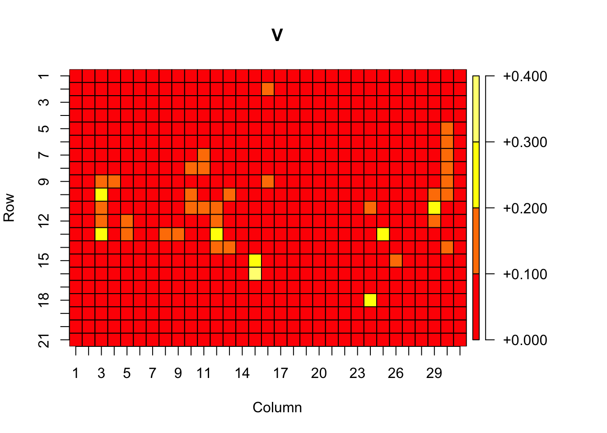
plot(abs(D), main ="D")
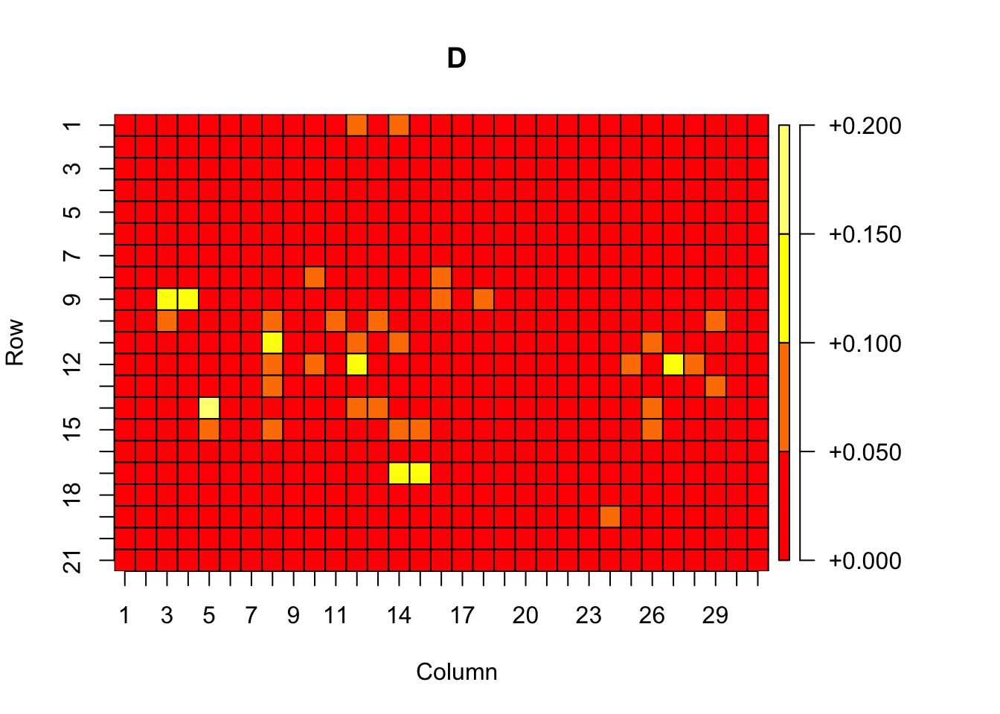
plot(abs(H), main ="H")
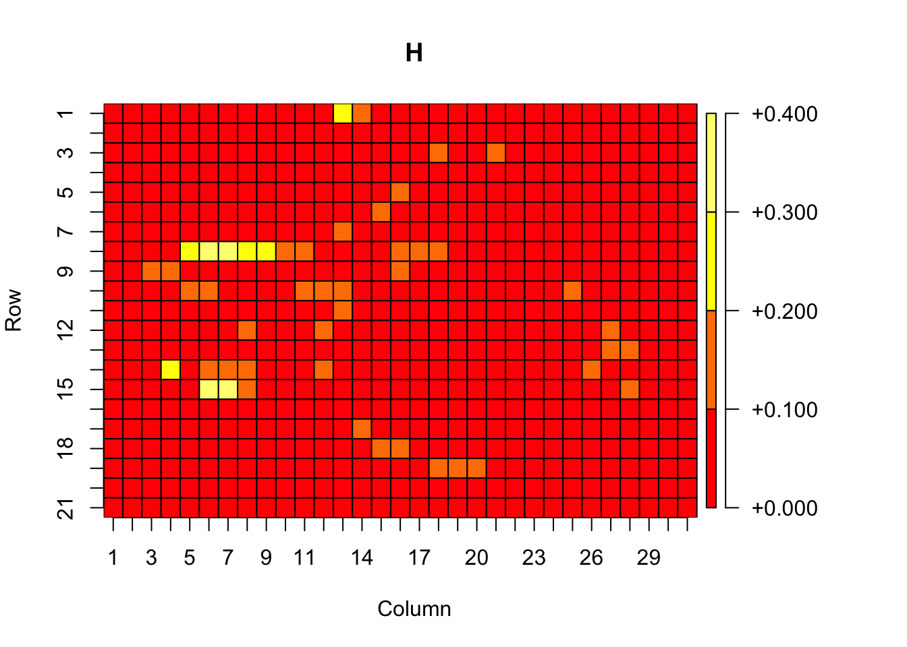
Here, I am plotting the edge matrices with their absolute values to get a clearer picture. Now, let us create a function that get an input matrix with a threshold value and outputs the matrix keeping the elements that have absolute values equal to or greater than the threshold value.
Careful, note that the scale of the values for these matrices are different. Therefore, the threshold value will be defined as the percentage (converted to decimal) of the maximum value of the matrix. To efficiently store the returned matrix, we will use the package Matrix and store the matrix as a sparse matrix. This will allow for more efficient storage.
We can see that our algorithm works. Let us create a reconstruction function that takes the four matrices and reconstructs the image.
imageReconstruction <-function(B, V, D, H){# Combine B, V, D, H to form the large matrix A top <-cbind(B, V) bottom <-cbind(H, D) largeMatrix <-rbind(top, bottom) dimension <-dim(B) numRow <-2* dimension[1] numCol <-2* dimension[2] W_mT =t(haarGet(numRow)) W_n =haarGet(numCol) originalPixelMatrix <-2* W_mT %*% largeMatrix %*% W_nreturn(as.cimg(originalPixelMatrix))}plot(IterativeHaarCompression(image, 4), main="After 4 Compressions")
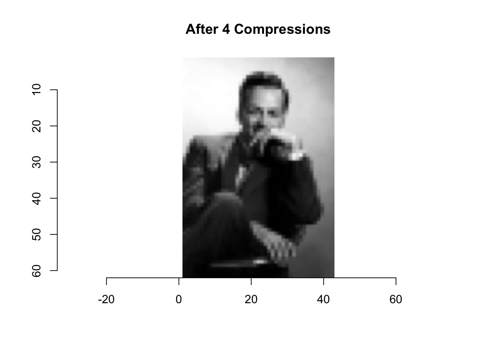
plot(imageReconstruction(B, V, D, H), main="Reconstruction from 5 Compressions")
percentage <-0.5compressedV <-as.matrix(zeroCompression(V, percentage))compressedD <-as.matrix(zeroCompression(D, percentage))compressedH <-as.matrix(zeroCompression(H, percentage))plot(imageReconstruction(B, compressedV, compressedD, compressedH), main="Reconstruction from 5 Compressions \n Added Compression of V, D, H \n Threshold of 50% of max value.")
This is super cool! Comparing the third plot to the fourth plot, we can conclude that the reconstruction with the compressed edge matrices is definetly higher in quality that the imag after 5 compressions. Let us see how the reconstruction changes as we vary the threshold values.
for(percentage inseq(0, 1, by=0.1)){ compressedV <-zeroCompression(V, percentage) compressedD <-zeroCompression(D, percentage) compressedH <-zeroCompression(H, percentage) actualPercentage <- percentage *100plot(imageReconstruction(B, as.matrix(compressedV), as.matrix(compressedD), as.matrix(compressedH)), main=glue("Reconstruction from 5 Compressions \n Added Compression of V, D, H \n Threshold of {actualPercentage}% of max value \n {nnzero(compressedV) + nnzero(compressedD) + nnzero(compressedH)} nonzero entries (sum of non-zero entries of V, D, H)."))}
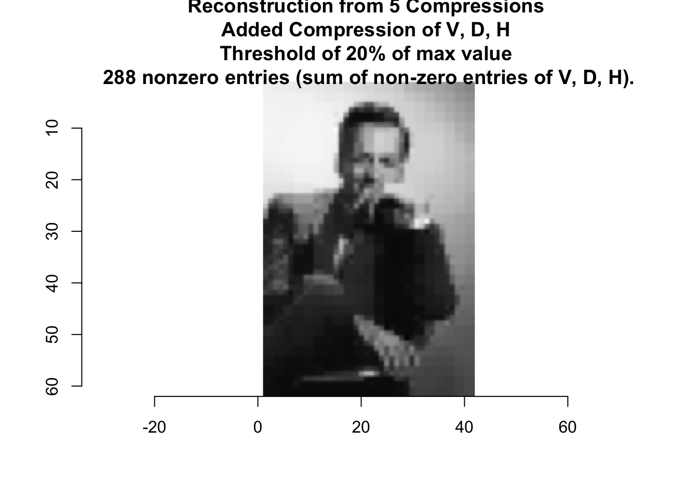
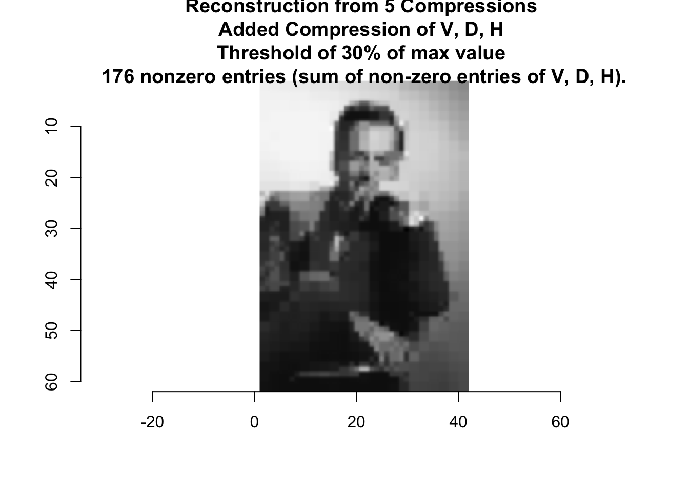
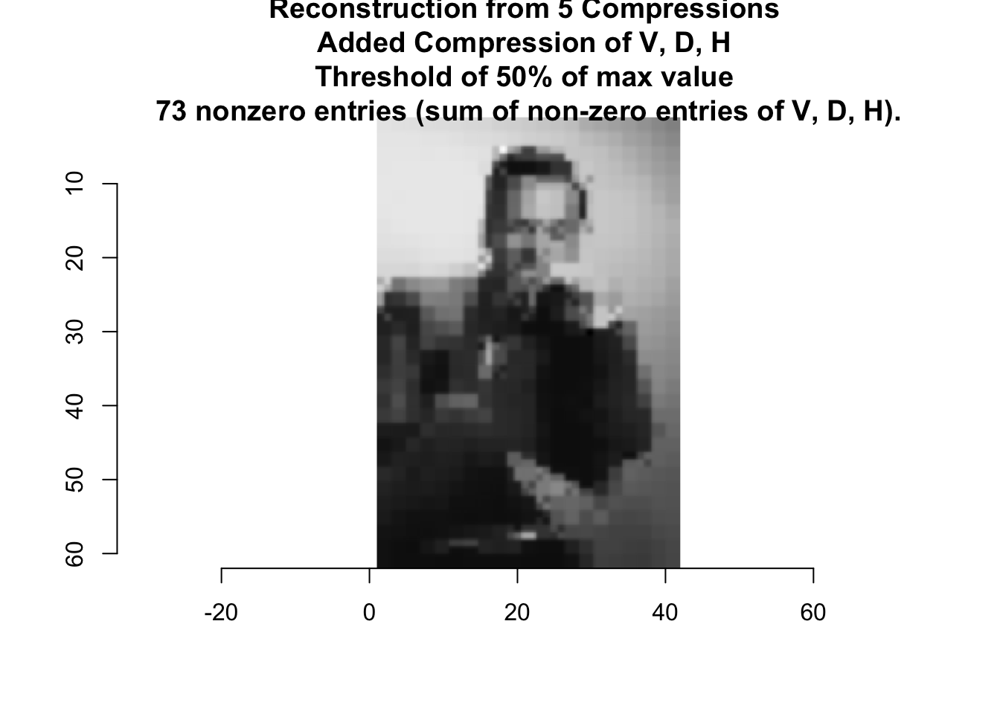
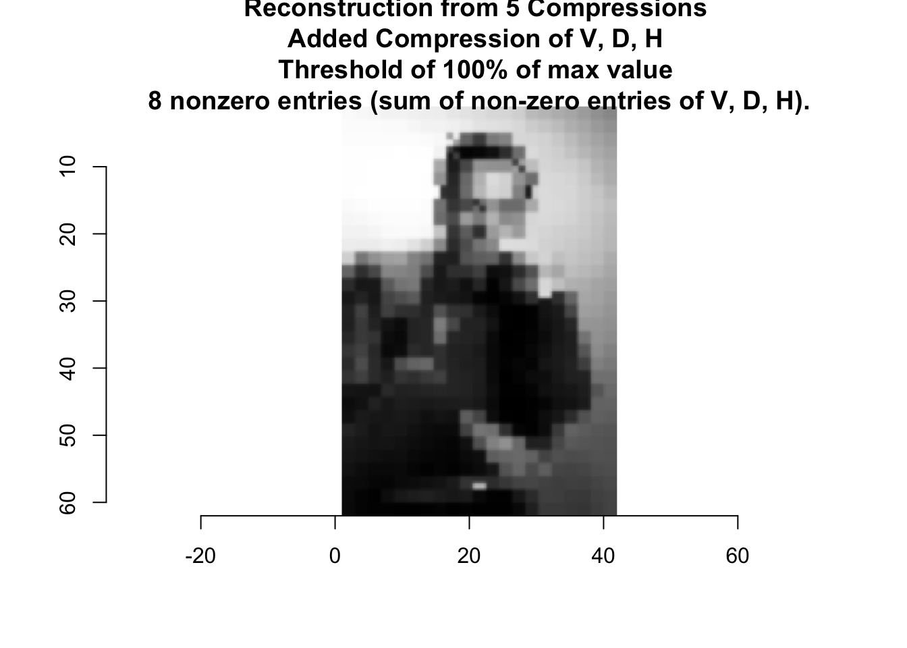
We can see that the quality of reconstruction decreases as we increase the threshold value. Naturally, the number of nonzero entries of V, D, H decreases as well. We may say that the number of nonzero entries of V, D, H determine the quality of the reconstruction.
Getting Down to Business
Let us set the threshold value/percentage to 30% of the maximum value and create the entire image compression algorithm function! This function will have an input of an image and a number denoting how many factors less should the size of the compressed image be compared to the original image. This function will then output a list of the B, V, D, H for storage after the appropriate number of Haar Wavelet Transforms and the compressions of V, D, H matrices. Another function, the image reader will be used when we want to convert the list back to an image. Let us call this compression the “combined compression”.
HanyanImageCompression <-function(image, sizeFactor){# Calculating first roughly the number of compressions that we need to get closer to the size factor. numberOfCompressionsRough <-log(sizeFactor, 4) numberOfCompressions <-round(numberOfCompressionsRough)# Getting the list of B, V, D, H matrices matrixList <-IterativeHaarCompressionList(image, numberOfCompressions)# Setting the percentage threshold and compressing V, D, H percentage <-0.3 compressedV <-zeroCompression(matrixList$V, percentage) compressedD <-zeroCompression(matrixList$D, percentage) compressedH <-zeroCompression(matrixList$H, percentage)return(list(B = matrixList$B, D = compressedD, V = compressedV, H = compressedH, numberOfCompressions = numberOfCompressions))}# We have to rewrite the imageReconstruction function so that it takes in the list that the HanyanImageCompression returns.imageReader <-function(list){ B <- list$B V <-as.matrix(list$V) D <-as.matrix(list$D) H <-as.matrix(list$H)return(imageReconstruction(B, V, D, H))}# Simple testingtestCompress <-HanyanImageCompression(image, 100)plot(imageReader(testCompress))
Great, the two functions work. Now we can check how well the combined compression method works.
test2Compress <-HanyanImageCompression(image, 300)HanyanImage <-imageReader(test2Compress)plot(HanyanImage, main=glue("Combined Compression with {test2Compress$numberOfCompressions} Haar Wavelet Compressions"))
Wow! The resulting image doesn’t seem to change much, at least when viewed from a distance.
We can see that our combined compression achieves a similar result to the three-times Haar Wavelet Compressed image with even smaller size!
If we zoomed in to the two iamges, however, we will see that the combined compression result looks more pixelated than compression with only the Haar Wavelet Transform. This makes sense, as our added compression of V, D, H makes us loss a lot of “intermittent” information between the pixels that we keep and the pixels that we set to 0.
# Let us check the sizes of the data files that we store.#save(test2Compress, file = glue("{path}/test2Compress.RData"))"The size of the saved combined compression file (bytes): "
[1] "The size of the saved combined compression file (bytes): "
#print(file.info(glue("{path}/test2Compress.RData"))$size)saveMatrix <- haarCompress$B"The size of the Haar Wavelet Compression file (bytes): "
[1] "The size of the Haar Wavelet Compression file (bytes): "
Wonderful, we can see how we can squeeze more compression of out the originally Haar Wavelet compressed image to reduce the size of the stored information about the image even further by compromising on a further reduced quality of the photo.
Testing the Combined Compression
Let us try this compression method on other images.
Here is a painting named Las Meninas by Diego Velázquez. Unfortunately I have to crop it to make the compression effects are more visible (sorry!)
LasMeninasLocation <-glue('{path}/LasMeninas.jpg')LasMeninas =load.image(LasMeninasLocation)LasMeninasGray <-grayscale(LasMeninas)plot(LasMeninasGray)LasMeninasCombinedCompress <-HanyanImageCompression(LasMeninas, 100)HanyanImage <-imageReader(LasMeninasCombinedCompress)plot(HanyanImage, main=glue("Combined Compression with {test2Compress$numberOfCompressions} Haar Wavelet Compressions"))save.image(HanyanImage, glue("{path}/HanyanCompressionLasMeninas.png"))haarCompress <-IterativeHaarCompressionList(LasMeninas, LasMeninasCombinedCompress$numberOfCompressions -1)plot(as.cimg(haarCompress$B), main=glue("{LasMeninasCombinedCompress$numberOfCompressions - 1} Haar Wavelet Compressions"))save.image(as.cimg(haarCompress$B), glue("{path}/{LasMeninasCombinedCompress$numberOfCompressions - 1}HaarWaveletCompressionsLasMeninas.png"))
The sizes of the images are shown below.
We can see the shortcomings of the combined compression technique compared to the Haar Wavelet Compression. Although we can save more space using the combined compression, for images other than portraits where there are many edges, information loss becomes a lot more noticeable. If you open the HanyanCompressionLasMeninas image, it might even look a little unnerving due to the faces becoming pixelated.
This is amazing. It’s really neat to see how well the compression works, how you can recover so much from even the compressed edges.
I’m enjoying seeing your thought process as you work through these projects!


 The dimensions of
The dimensions of 


I think even the 4 compression Feynman is pretty sad! I can’t tell who it is, only the rough time period that the person is from…